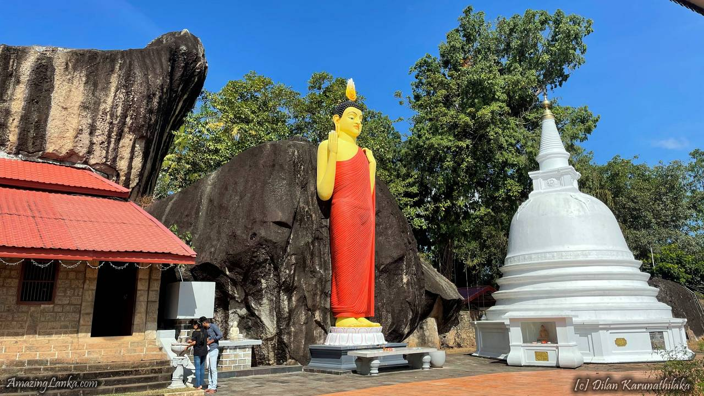

Yatagala Raja Maha Viharaya
Also known as the Mani Chethiya or Yattalaya in some old scriptures, the Yatala Raja Maha Viharaya is an ancient Buddhist Stupa bordered by sculptures of elephant heads. One can revisit the olden times in the museum that is built near the Pagoda that gives an in-depth tale of the structure.
You can also spot a statue of the Buddha, which is one of the very few remains that this place covers. The Lotus Pond attracts many children to play around them.
Location: Debarawewa - Tissamaharama area, Hambantota District
Timing: Morning to Evening
Entry Fee: Free
Location: Debarawewa - Tissamaharama area, Hambantota District
Timing: Morning to Evening
Entry Fee: Free